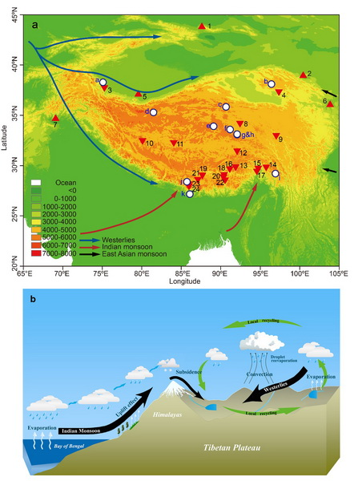

最近，地学领域最具影响力期刊之一Reviews of
Geophysics (IF=13.906)
发表了我所姚檀栋研究员（第一作者）、高晶副研究员（通讯作者）与其他10多名作者共同撰写的文章。文章通过青藏高原降水稳定同位素揭示了印度季风与西风相互作用的三种模态。
中科院青藏高原研究所研究人员多年来在青藏高原降水稳定同位素的观测中获得的结果和高精度稳定同位素大气环流模型模拟分析相结合，发现印度季风和西风对青藏高原降水中稳定同位素有决定性影响，在空间和时间上以三种模态表现出来，即印度季风模态、西风模态和过渡模态（图1）。印度季风模态表现为降水氧稳定同位素在春季达到最高值，自5月开始迅速减小，8月达到最低值。西风模态表现为降水氧稳定同位素与气温和降水量具有相同的季节变化模式，即夏季高值，冬季低值，其降水氧稳定同位素与气温有显著正相关。过渡模态表现为降水氧稳定同位素没有明显的冬季或者夏季的极值，其与气温和降水量的关系也较其他两个区域复杂。研究发现，当西风区和季风区受单一主导大气过程控制时，温度效应更显著。
这一研究是建立在大数据挖掘基础之上的。研究通过对青藏高原24个站点（19个TNIP站点和5个GNIP站点，图2）长于10年的观测降水氧稳定同位素分析，建立了一个目前最完整的青藏高原降水氧稳定同位素数据库。利用这一数据库研究了降水氧稳定同位素的时空分布模式和其与气温、降水量的相关性，从而将青藏高原降水氧稳定同位素分为三个不同的模态，同时，结合大气环流分析，发现西风和印度季风的相互作用是青藏高原降水氧稳定同位素三种模态的核心驱动力。
这一研究是以现代isoGCMs模拟手段的运用为提升手段的。研究将24个站点观测数据结合三个目前精度最高的同位素GCM模型（LMDZiso，ECHAM5-wiso和REMOiso）的模拟结果，及同时期气象数据（气温、降水量和风场）分析，评估了青藏高原降水氧稳定同位素的气候控制因素，分析了温度效应、降水量效应和海拔效应在不同区域的差异。本研究还首次提出水汽来源自孟加拉湾向南印度洋的转变导致了青藏高原东南部季风期降水δ18O的两次显著减小。
这一研究结果对于古气候氧稳定同位素记录的解释和古气候、古海拔高度模型模拟都有重要意义。

图1. 青藏高原降水δ18O三种模态（西风模态、印度季风模态和过渡模态）的季节变化

图2. 青藏高原站点分布图和影响青藏高原降水稳定同位素的主要过程示意图